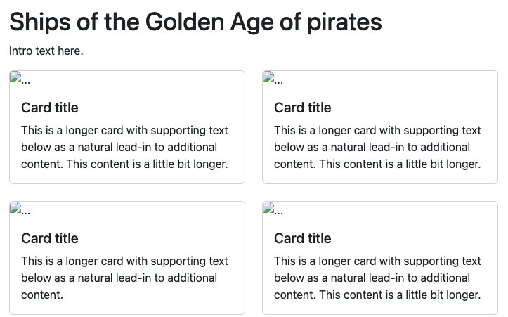

26 Data and loops
We’re going to create the Pirate Ships page we added to our nav earlier and introduce some data to our project and build some loops to display that data.
26.1 Create a new page
- Create a new page inside
src/njk/calledpirate-ships.njk. - Add the following code:
{% extends '_templates/base.njk' %}
{% block content %}
<article class="container">
<h1>Ships of the Golden Age of pirates</h1>
<p>Intro text here.</p>
</article>
{% endblock %}- Save the file and then test your navigation link to make sure it works. If it doesn’t, make sure you created the new file in the right folder. It should be right next to
index.njk.
26.2 Let’s add some data
OK, are you ready to jump into some advanced features here? We are going to introduce a concept where we have a Google Sheet to manage the editing of data, but then we’ll “fetch” that data into our project so we can use it in the next step.
26.2.1 The data source: Google Sheets
I have already created a Google Sheet of pirate data. Click on that link so you can take a look at it. Imagine you are in a newsroom and many reporters are gathering data for your project. You could share a Sheet like this with them and they could edit it and create new rows of data. It’s a good way to keep track of stuff.
Our next trick is to tell our project here to download that data and format it in a way that we can use it. That file type we want in the end is called JSON, or JavaScript Object Notation. JSON is just “data” for JavaScript. There is a feature built into this project where we can download this data and translate it. One thing to know is the Google Sheet needs to be shared so that “anyone” can view it.
Here we will “tell” this project about the Google Sheet.
- Open the file in your project called
project.config.json. - After the closing
}on line 12, we are going to add the following code:
,
{
"fileId": "1G-aJA1H5C-B05Hlpx2RiojYcsNNXQ5ntvUEArRZ5O6w",
"type": "sheet",
"name": "pirates"
}That first comma in the code above needs to come right after the } that closes out the “bookstores” configuration.
The fileId value there is from the URL of the Google Sheet. It’s the long string before /edit/ in the URL, and it is unique to for every Google Sheet (and Doc, for that matter.). The type is “sheet”. the other possible value is “doc”. We’ll do one of those later. The name is what we want the file to be called when it is downloaded.
What we’ve done here is add to a “files” array in this JSON config file. This is a list of all the Google Sheets and Docs used in the project.
Before we can download the data we have to stop our browsersync process and run a new one to fetch our data.
- Go to your Terminal and do Control-C to stop the browsersync.
- Run
gulp fetch. “gulp” is our command and “fetch” is our task. - The result of the command should download three files. (Two were already in the config – library & bookstores – and we just added the new one “pirates”.)
This downloaded all the files to the src/data/ folder.
If you have a problem with
gulp fetchand get an error, you can use these steps to download the data. Do that and then move on with the rest of the lesson, but reach out to me to see if we can fix the problem.
Go ahead and open the files at src/data/pirates.json and peek at it. Here is just a snippet:
{
"ships": [
{
"ship_name": "Queen Anne’s Revenge",
"captain": "Edward \"Blackbeard\" Teach",
"blurb": "Edward \"Blackbeard\" Teach was one of the most feared pirates in history. In November 1717, he captured La Concorde, a massive French ship used to transport enslaved people. He refitted the Concorde, mounting 40 cannons on board and renaming her Queen Anne's Revenge. With a 40-cannon warship, Blackbeard ruled the Caribbean and the eastern coast of North America. In 1718, the Queen Anne's Revenge ran aground and was abandoned. In 1996 searchers found a sunken ship they believe to be the Queen Anne's Revenge in the waters off of North Carolina: some items including a bell and an anchor are on display in local museums.",
"source": "https://www.thoughtco.com/famous-pirate-ships-2136286"
}
]
}Inside this pirates.json file is an array called “ships”. Think of arrays as a collection of data. We could have more than one array in our file, but right now we only have one.
Inside our “ships” array we have eight items, one for each ship.
Each item (or ship in our case) has objects that are in key:value pairs. Our first “key” is ship_name and our first “value” is "Queen Anne’s Revenge".
I’ll try to keep all of these terms straight, but I admit I mix them up.
The key here is that we have downloaded this data, once we restart our dev environment the data will be “in context”, meaning our program will allow us to access it.
It’s probably easier to do it than explain it.
- Restart
gulp dev. - Go into your
src/njk/pirate-ships.njkfile. - After our
<p>tag in the intro, add a new line and add this:
<h3>{{ pirates.ships[0].ship_name }}</h3>When the page refreshes you should see “Queen Anne’s Revenge” show up.
pirates is the name of the file. ships is the name of the array. [0] is the order of the item, and we want the first one. Remember JavaScript starts counting at zero. ship_name is the object we are pulling from the item.
Now go back into your ships page and change the number to [1] instead of [0] and save it. What do you think the result will be? Go back look at the page and see. After you’ve seen the change, you can go ahead and remove the H3 and contents, as we don’t need it here. I just wanted to show how it works.
So now we have a list of pirate ships in our project “context” and can build a cool list of them. That is next.
26.3 Loops with data
Our aim here next is to use Bootstrap cards to create a list of pirate ships and their descriptions from our new data. If you open up those docs and peruse them you’ll see there are many different options and configurations. The one we are going to start with is Using grid markup.
- Go to the Using grid markup section in the docs and copy the code provided there.
- After the closing
</p>tag for the intro, add a new line. - Paste your code. This already has the row and columns we need.
- Save your file and look at your page.
It should look like this:

We now have two cards on our page. Each card is in a column set at col-sm-6, so they show over six columns at small or larger. If you view on a phone, they will stack. By putting each card in a column like this, we can use the cols- controls to decide how many should display next to each other at each breakpoint.
Our plan here is to have a card for each ship in our data. We could create eight columns/cards and use our data inside each card, but what if we add more ships to our data source later? Instead, we’ll create a loop that writes a new column/card for each ship in our data.
Our Nunjucks templating system allows for loops like this because it is written in JavaScript. It might help to reference the Nunjucks documentation on “for” loops to see how they work.
We’re going to remove one of our new column/cards, but then set the remaining one to draw for each new ship in our data.
- In the cards code, remove the one of the col/cards. It starts with
<div class="col-sm-6">and totals 9 lines of code. You want to make sure you still have even opening and closing divs for everything. If you save at this point and look at your page, it should have only one card but otherwise be the same. - Add a new line after the closing of the
<div class="row">line. - Add the following to the new line:
{% for ship in pirates.ships %} - Add a new line right above the closing
</div>for the row. - Add the following to the new line:
{% endfor %}
That code should look like this:
<div class="row">
{% for ship in pirates.ships %}
<div class="col-sm-6">
<div class="card">
<div class="card-body">
<h5 class="card-title">Special title treatment</h5>
<p class="card-text">With supporting text below as a natural lead-in to additional content.</p>
<a href="#" class="btn btn-primary">Go somewhere</a>
</div>
</div>
</div>
{% endfor %}
</div>- Save your file and go look at your page.
Now you have eight cards! Let’s break down what we’ve done here.
Let’s take this line: {% for ship in pirates.ships %}
{% %}indicates we are doing special stuff, just like we’ve done before with “blocks” and “extend”.formeans we are starting the loop.shipis what we are calling a single pass through the data. We are “naming” that single item as a “ship” so we can refer later to key values in that row of data. We can use any word we want, but I always use a term logical to the data. We are looping through a bunch of ships, so a single one of those is a single “ship”.in pirates.shipsis defining which array we are looping through. The “pirates” part is the file we are looking in, and “ships” is the name of the array inside that file.
Everything after that will get repeated until we reach:
(% endfor %)
which says STOP REPEATING.
26.3.1 Update the headline
At this point you are thinking “That’s cool, Prof, but they are all the same.” Well, remember when I showed above that we can call data from an array? We’ll do that next, except we don’t have to specify the order from the array since we’ve named the current pass as a “ship”. We are now going to call that data in our loop.
- For the headline in the
<h5>text, replace “Special title treatment” with this:{{ ship.ship_name }} - Save your file and go look at your page. Now you have a new ship name in each card.
To call a variable from our data, we use the double curly-brace: {{ }}. (This is opposed to {% %} which does other things).
Since we named a single item a “ship” we use that, and then use the dot notation to call the object key : {{ ship.ship_name }}. I like to put spaces around the names for readability, but it is not required.
26.3.2 Update the blurb
If we look at our example JSON, we see the key for the description of the ship is called a blurb. So we can use the same style to replace the text in our code with the new value.
- Go into the code and replace the text inside the
<p>tag with:{{ ship.blurb }} - Save and check your page.
Now you should be showing the description of each ship after the name of the ship.
26.3.3 Update the source link
We have these big buttons that look like they could be a link to somewhere, which would be perfect to use to link to the webpage with more information about our ship. We’ll modify those next to add the URL, change the text and change the button display to a simple link.
- Go into the
hrefof the button and replace the#with:{{ ship.source }}. This is the URL in our data that is the website where we got the info. We are inserting it into an href. - Remove the
class="btn btn-primary"as that is what make the link into a button. (Which is cool, but we don’t need to draw that much attention to our source link.) - Replace the text “Go somewhere” with simply “Source”.
- Inside the
hrefelement, and an attribute to open the link in a new page:target="_blank". - Save your file and go check your page and make sure the links work properly.
26.3.4 Adding the captain
The last thing we need is to add our captain into the card. We don’t have an HTML element to update from our Bootstrap code, so we’ll just add our own.
- Add a new line after the
<h5>line. - Add an
<h6>and fill it with the code necessary to display the captain’s name. Refer to the JSON example above to figure out what the key value is. - Save and check.
26.3.5 Adjusting columns for breakpoints
The cards example we pulled from the Bootstrap docs has just one column breakpoint set at col-sm-6 which gives us two cards per row. Let’s adjust that for larger screens to show three cards per row.
Remember, we are working with a 12 column grid. When we set col-sm-6 that means that each card takes up six columns, which gives us the two cards. If at the large size we want three to a row, then we would want each card to take four columns. (12 / 3 = 4).
- On the line that has
<div class="col-sm-6">, add another classcol-lg-4so it looks like this:<div class="col-sm-6 col-lg-4"> - Save your file and look at your page.
- Change the width of your browser from wide to very small and watch the columns change.
- Remember another way to do this is to use the Inspector. Get the inspector, then click the little “mobile” icon and controls to show different types of mobile devices.
26.4 Fix some display nits
We have all our content here, but let’s make it a bit nicer. The cards sit on top of each other and are different sizes. Let’s fix that with some Bootstrap spacing utilties.
- On the
class="card"div, add another class so it isclass="card mb-4". We did the same thing in our Bootstrap lesson.mis margin,bis bottom and4is a value between 1-5. - Save and check that you have vertical space between the cards.